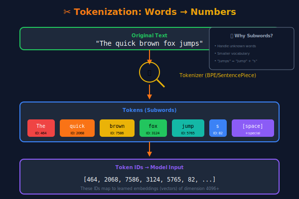
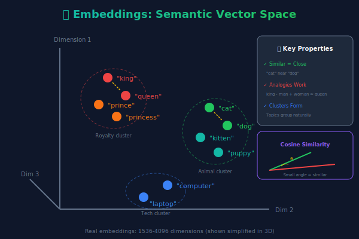
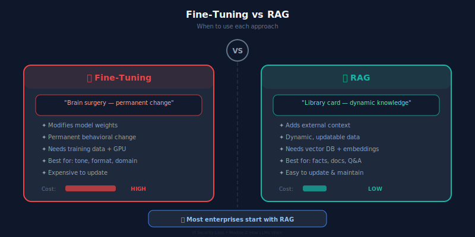

🎯 Explain how text is converted to numbers (tokenization & embeddings)
🎯 Describe the attention mechanism and why it matters
🎯 Understand the LLM training pipeline: pre-training → RLHF
🎯 Compare fine-tuning, RAG, and prompt engineering approaches
🎯 Explain temperature, top-p, and context windows in practical terms
Why This Matters
$13.4B
spent on LLM infrastructure in 2025 (Epoch AI)
67%
of enterprise AI failures stem from misunderstanding model capabilities (Gartner, 2025)
Understanding how LLMs work prevents expensive mistakes.
Section 1
Tokenization: Text → Numbers
What Is Tokenization?
Tokenization splits text into tokens — subword units that the model processes. Each token maps to a number (ID) in the model's vocabulary.

Tokenization in Action
Input: "Hello world! How are you?"
Token
Token ID
Notes
Hello
9906
Common word = 1 token
world
1917
Note: space is part of token
!
0
Punctuation = separate token
How
1374
Leading space included
are
527
Common word
you
499
Common word
?
30
Punctuation
7 tokens for 5 words — tokenization adds overhead
Token Economics: Why This Matters for Business
Model
Vocab Size
Input Cost (1M tokens)
Output Cost (1M tokens)
GPT-4o
~100K
$2.50
$10.00
Claude 3.5 Sonnet
~100K
$3.00
$15.00
Gemini 1.5 Pro
~256K
$1.25
$5.00
Llama 3 70B (self-hosted)
~128K
~$0.50*
~$0.50*
*Self-hosted costs vary by infrastructure. Prices as of early 2025.
📐 Rule of thumb: 1 page of English text ≈ 500 tokens ≈ 375 words
Section 2
Embeddings: Words as Vectors
Embeddings: Giving Words Meaning
The Idea
Each token is represented as a vector (list of numbers) in high-dimensional space.
Similar words have similar vectors.
Dimensions:
GPT-3: 12,288 dimensions
GPT-4: ~12,000+ dimensions
BERT: 768 dimensions
The Magic
Embeddings capture relationships:
"King" - "Man" + "Woman" ≈ "Queen"
"Paris" - "France" + "Germany" ≈ "Berlin"
"Doctor" and "Nurse" are close in space
This is how models "understand" that words relate to each other.
Visualizing Embeddings

In reality, embeddings have thousands of dimensions. We project to 2D/3D for visualization. Key insight: distance = similarity. Nearby points mean similar meanings.
Embeddings in Enterprise
🔍 Semantic Search
Search by meaning, not keywords
Notion AI, Elastic, Pinecone
🎯 Recommendations
Find similar products, articles, candidates
Spotify, LinkedIn, Amazon
🛡️ Anomaly Detection
Spot unusual patterns in logs or transactions
Splunk, Datadog, CrowdStrike
Section 3
The Attention Mechanism
The Problem: Context Matters
Consider these two sentences:
"The bank of the river was muddy."
"I deposited money at the bank."
Same word, completely different meanings. The model needs to look at other words to determine the meaning.
Before Transformers (RNNs): Processed words left-to-right, sequentially. Long-range dependencies were lost.
With Attention: Every word can "look at" every other word simultaneously.
Self-Attention: The Core Mechanism
For each token, attention computes three vectors:
Query (Q) "What am I looking for?"
Key (K) "What do I contain?"
Value (V) "What information do I provide?"
Attention Score = softmax(Q · KT / √d) · V
High Q·K similarity → high attention weight → more influence from that token's Value
Multi-Head Attention
Instead of one attention calculation, Transformers run multiple attention heads in parallel — each learning to focus on different relationships.
Different heads might learn:
🔵 Head 1: Subject-verb relationships
🟢 Head 2: Adjective-noun relationships
🟣 Head 3: Pronoun references
🟠 Head 4: Negation tracking
Scale in practice:
GPT-3: 96 attention heads
GPT-4: ~120 attention heads (estimated)
Each head: 128 dimensions
Combined: rich, multi-faceted understanding
Section 4
How LLMs Are Trained
The LLM Training Pipeline
Stage 1 Pre-training Learn language patterns from internet-scale data
→
Stage 2 SFT Supervised Fine-Tuning on curated Q&A pairs
→
Stage 3 RLHF Reinforcement Learning from Human Feedback
Data: Trillions of tokens
Cost: $10-100M+
Time: Months
Data: ~100K examples
Cost: $100K-1M
Time: Days-weeks
Data: Human rankings
Cost: $1-10M
Time: Weeks
Pre-training: What's in the Data?
Source
% of Training Data (est.)
What It Teaches
Common Crawl (web pages)
~60%
General knowledge, writing styles
Books (Books1, Books2)
~16%
Long-form reasoning, narrative
Wikipedia
~3%
Factual knowledge, structure
Code (GitHub)
~10%
Programming, logical patterns
Academic papers (arXiv)
~5%
Scientific reasoning
Other (Reddit, forums, etc.)
~6%
Conversational patterns, opinions
Security note: Training data may contain PII, copyrighted content, and biased language. This has legal and ethical implications for enterprise use.
RLHF: Teaching AI to Be Helpful
Generate: Model produces multiple responses to the same prompt
Rank: Human raters rank responses from best to worst
Train reward model: A separate model learns to predict human preferences
Optimize: Original model is trained to maximize the reward model's score
Before RLHF
"The capital of France is Paris. Paris is also known as the City of Light. The Eiffel Tower was built in 1889..." (rambling, unfocused)
After RLHF
"The capital of France is Paris." (concise, direct, helpful)
Section 5
Customization: Fine-Tuning vs. RAG vs. Prompting
Three Ways to Customize LLMs

Approach
Cost
Data Needed
Best For
Latency
Prompt Engineering
Free
None
Quick tasks, prototyping
Low
RAG
$-$$
Your documents
Up-to-date knowledge, citations
Medium
Fine-Tuning
$$-$$$
1K-100K examples
Specific behavior, style, domain
Low
RAG: Retrieval-Augmented Generation
User Query "What's our refund policy?"
→
Vector Search Find relevant docs
→
LLM + Context Generate answer with citations
Advantages
✅ Always uses current data
✅ Can cite sources
✅ No model retraining needed
✅ Data stays in your control
Challenges
⚠️ Retrieval quality is critical
⚠️ Adds latency (search step)
⚠️ Context window limits
⚠️ Requires vector database infrastructure
Section 6
Parameters That Matter: Temperature, Top-p & Context Windows
Temperature: Controlling Randomness
Prompt: "The best programming language is"
Temp = 0.0
"Python, due to its versatility and readability."
(Same answer every time)
Temp = 0.7
"Python for data science, but Rust for performance..."
(Balanced creativity)
🏢 Enterprise guidance: Use 0.0–0.3 for factual tasks (data extraction, classification). Use 0.5–0.8 for creative tasks (drafting, brainstorming). Avoid >1.0 in production.
Context Windows: How Much Can the Model "See"?
Model
Context Window
Equivalent To
GPT-3.5
16K tokens
~24 pages
GPT-4o
128K tokens
~200 pages (a novel)
Claude 3.5 Sonnet
200K tokens
~300 pages
Gemini 1.5 Pro
2M tokens
~3,000 pages (several textbooks)
⚠️ Important: Larger context ≠ better comprehension. Research shows performance degrades in the "middle" of long contexts ("Lost in the Middle" — Liu et al., 2023). Put critical information at the start or end.
Model Parameters: Size Comparison
Model
Parameters
Training Cost (est.)
Release
GPT-2
1.5B
~$50K
2019
GPT-3
175B
~$4.6M
2020
LLaMA 2 70B
70B
~$2M
2023
GPT-4
~1.8T (MoE)
~$100M+
2023
Claude 3 Opus
Undisclosed
Undisclosed
2024
Llama 3 405B
405B
~$30M
2024
MoE = Mixture of Experts: only a subset of parameters activate per token, making large models more efficient.
Open-Source vs. Closed-Source Models
Factor
Closed (GPT-4, Claude)
Open (Llama 3, Mistral)
Performance
Generally higher (frontier)
Catching up rapidly
Data Privacy
Data sent to provider
Runs on your infrastructure
Cost
Per-token pricing
Infrastructure cost only
Customization
Limited (API parameters)
Full (fine-tune, modify)
Compliance
Depends on provider DPA
Full control
Support
Vendor SLA
Community / self-support
🏢 Enterprise trend: Many use closed models for prototyping, then deploy open models for production — combining speed of iteration with data control.
Code: Calling an LLM API
from openai import OpenAI
client = OpenAI(api_key="sk-...") # Never hardcode in production!
# Basic completion with parameter control
response = client.chat.completions.create(
model="gpt-4o",
messages=[
{"role": "system", "content": "You are a security analyst. Be concise."},
{"role": "user", "content": "Explain SQL injection in 3 sentences."}
],
temperature=0.3, # Low = factual, consistent
max_tokens=200, # Limit output length
top_p=0.9, # Nucleus sampling threshold
)
print(response.choices[0].message.content)
print(f"Tokens used: {response.usage.total_tokens}")
print(f"Cost estimate: ${response.usage.total_tokens * 0.00001:.4f}")
# Output: "SQL injection is an attack where malicious SQL code is
# inserted into application queries through user input fields.
# Attackers exploit this to read, modify, or delete database
# contents. Prevention requires parameterized queries, input
# validation, and least-privilege database accounts."
Myth vs. Reality
🚫 Myth
"Bigger models are always better."
✅ Reality
Mistral 7B outperforms LLaMA 2 13B on many tasks. Data quality, architecture, and training methodology matter as much as parameter count. Microsoft's Phi-3 Mini (3.8B) rivals models 10x its size.
🚫 Myth
"Fine-tuning is always needed for enterprise use."
✅ Reality
80% of enterprise use cases can be solved with good prompt engineering + RAG. Fine-tuning is expensive, hard to maintain, and creates version management challenges. Start simple.
Paste a paragraph of English text — count the tokens
Paste the same content in another language — compare token counts
Try code vs. prose — which is more token-efficient?
Temperature Experiment (10 min): Using ChatGPT or Claude:
Ask the same question 5 times at temperature 0 (via API/playground)
Then 5 times at temperature 1.0
Document: How much do the responses vary? Which is better for your use case?
🧠 Knowledge Check
What is a token, and why isn't 1 token = 1 word?
Explain in one sentence what the attention mechanism does.
You need an LLM to answer questions about your company's internal wiki. Which approach is best?
Fine-tuning
RAG
Higher temperature
Bigger model
What temperature setting would you use for a legal document summarizer?
Answers: 1) Subword unit; tokenizers split uncommon words and handle punctuation/spaces separately. 2) Attention lets each token determine which other tokens are most relevant to it. 3) B — RAG retrieves relevant wiki pages at query time. 4) 0.0–0.2 (factual accuracy is critical).
Key Takeaways
✅ Tokenization converts text to numbers — and directly impacts cost and multilingual performance
✅ Embeddings represent meaning as vectors — enabling semantic search and similarity
✅ Attention lets models focus on relevant context — the core innovation behind Transformers
✅ LLM training is a 3-stage pipeline: pre-training → SFT → RLHF
✅ Start with prompting, add RAG for knowledge, fine-tune only when necessary
✅ Temperature, context window, and model size all have practical trade-offs
🔬 Lab Preview
Lab 2: LLM Under the Hood
Part A: Build a simple tokenizer and visualize token boundaries in different languages
Part B: Use the OpenAI API to experiment with temperature, top-p, and max_tokens systematically
Part C: Build a minimal RAG system — embed 5 documents, search by similarity, and generate answers
Time: 60 minutes | Deliverable: Working Jupyter notebook with experiments and findings
📚 Resources
Essential Reading
"Attention Is All You Need" (Vaswani et al., 2017)
"Lost in the Middle" (Liu et al., 2023)
OpenAI Tokenizer: platform.openai.com/tokenizer
Hugging Face Course: huggingface.co/learn
Videos & Tools
3Blue1Brown: "But what is a GPT?" (YouTube)
Andrej Karpathy: "Let's build GPT" (YouTube)
Jay Alammar: "The Illustrated Transformer"
LMSys Chatbot Arena: lmsys.org
Questions & Discussion
🤔 Which concept from today was most surprising or counterintuitive?
Next up: Module 3 — AI Tools Landscape
We'll evaluate ChatGPT, Claude, Gemini, Copilot, and open-source alternatives.